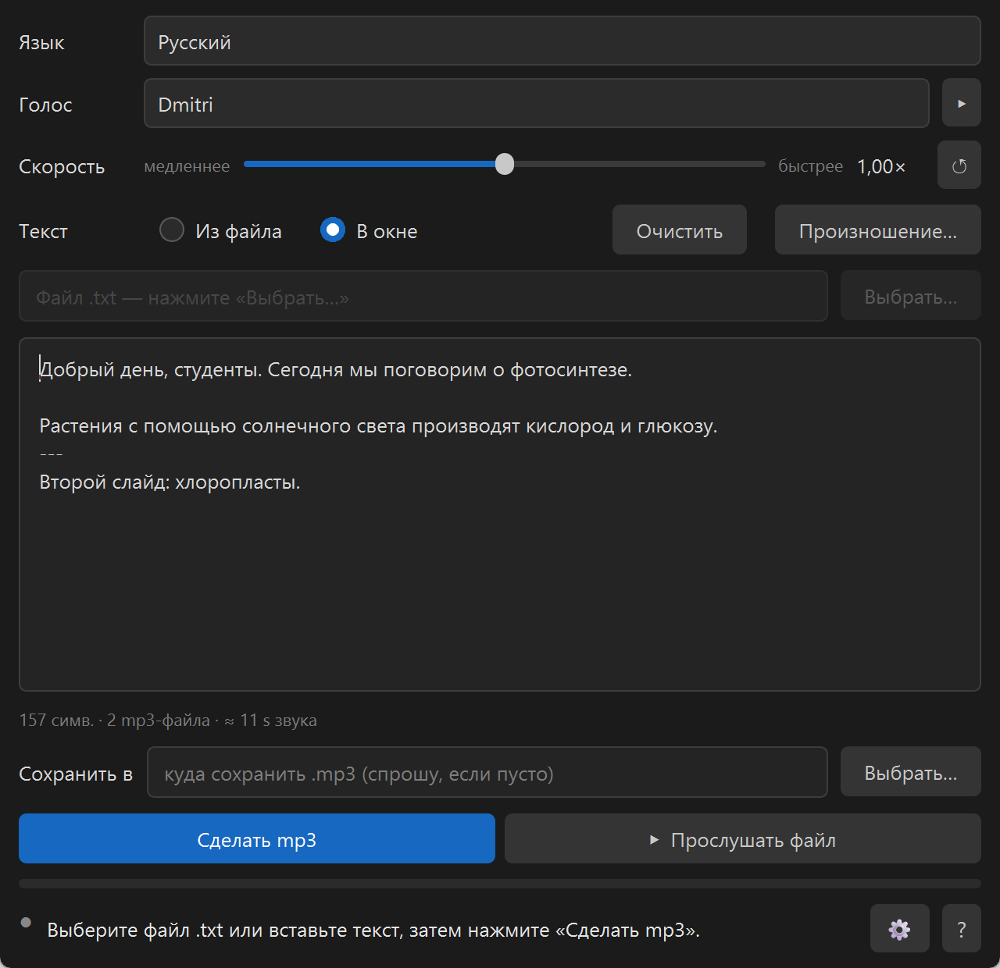
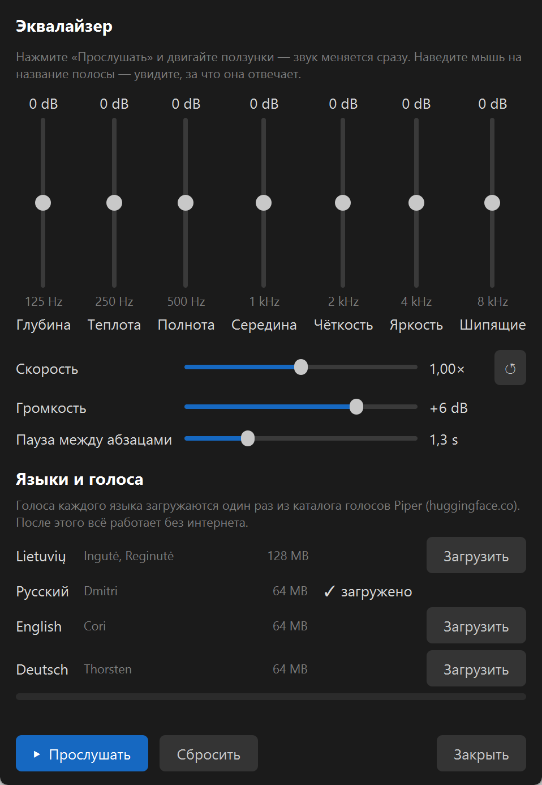

Сделано с помощью ИИ: код программы писал Claude (Anthropic) вместе с Робертасом, иконка создана ИИ. Записи синтетические — в каждом MP3 это отмечено меткой.
Для чего
Преподавателям и учителям
Озвучить комментарии к слайдам. Строка --- в тексте делит запись на несколько MP3: по файлу на каждый слайд.
Целая книга
Откройте файл .txt: программа покажет, сколько примерно будет длиться запись и работа, и озвучит его целиком. 100 страниц обычно занимают несколько минут.
Тем, кому удобнее слушать
Статья, письмо, заметки — в MP3 и в наушники: в дороге, на кухне, на прогулке.
Что умеет
Четыре языка
Русский (Dmitri), литовский (Ingutė и Reginutė), английский (Cori), немецкий (Thorsten) — все из официального каталога голосов Piper. Выбираете язык, и на него переключается всё окно. Кнопка ▸ даёт послушать заранее.
Голоса только нужных языков
При установке отметьте языки галочками; их голоса скачиваются один раз (литовский 128 МБ, остальные по 64 МБ). Другие языки можно добавить когда угодно через ⚙ → «Языки и голоса».
Ползунок скорости
Медленнее или быстрее — как вам удобно. ↺ возвращает собственный темп голоса.
Из файла или в окне
Файл .txt (подходят и старые кодировки Windows) или вставленный либо набранный текст.
Словарик произношения
«Как написано → как должно звучать» для терминов и фамилий, с прослушиванием. У каждого языка свой словарик.
Эквалайзер ⚙
Семь полос от низких до высоких, громкость и пауза между абзацами в секундах. Двигаете ползунки во время прослушивания — звук меняется сразу. Там же и скорость.
Выделите и ▸
Выделите кусок текста и нажмите ▸ — прозвучит только он.
Как выглядит


Как пользоваться
Выберите язык, голос и, если нужно, скорость.
Из файла — «Выбрать…» и файл .txt; В окне — вставьте текст.
«Сделать mp3» — файл появится рядом с текстовым файлом (или там, где укажете).
«Прослушать файл» — не понравилось? Измените скорость, голос или звук и сделайте заново.
Скачать:Skaitykle-0.2.0-setup.exe — около 80 МБ, Windows 10/11 (64 бит). Устанавливается в ваш профиль, права администратора не нужны. При первом запуске программа предложит скачать голоса отмеченных языков и проверит каждый файл по контрольной сумме; дальше работает без интернета.
Windows покажет синее окно «Система Windows защитила ваш компьютер». Это не вирус: у установщика нет платной цифровой подписи, поэтому SmartScreen не знает издателя. Нажмите «Подробнее» → «Выполнить в любом случае». Сумма SHA256 файла указана на странице Release рядом с ним.
Приватность, честно
Текст и звук не покидают компьютер: голоса работают на вашей машине. В интернет программа выходит только в двух случаях. Первый — скачать голоса выбранных языков из каталога голосов Piper (huggingface.co): только когда вы нажмёте «Загрузить», и скачивается только файл голоса. Второй — «Спросите ИИ»: программа переспросит, уверены ли вы, и только тогда откроет в браузере claude.ai с описанием программы. Вашего текста нет ни там, ни там.
Голоса
Dmitri (русский) — записи из OHF-Voice voice-datasets, CC0.
Reginutė (литовский) — обучена на корпусе LIEPA, лицензия CC BY 4.0.
Ingutė (литовский) — выросла из модели Reginutė с помощью Python-инструментов авторов. Лицензия NewGenLTU OpenRAIL-D: пользоваться можно свободно и бесплатно, коммерческое использование не запрещено; передавая дальше, приложите LICENSE-VOICE и укажите происхождение.
Cori (английский) — записи LibriVox, общественное достояние.
Thorsten (немецкий) — Thorsten-Voice, CC0.
Все голоса опубликованы в официальном каталоге голосов Piper; скачанный файл программа проверяет по контрольной сумме (SHA256). Русский, английский и немецкий голоса мы выбирали по лицензии записей: только CC0 или общественное достояние.
Ограничения
Собственный рецепт чтения программы (словарь ударений, числа словами) — только для литовского. Русский, английский и немецкий голоса читают так, как их научил Piper: числа произносят сами, и падежи числительных в русском не всегда правильные.
Пока читает только .txt и вставленный текст (из Word, PDF или PowerPoint текст можно скопировать в окно).
Только Windows.
Это синтетический голос — естественный, но не человек.
Не получается? Спросите ИИ
Не программист? В программе нажмите «?» → «Не нашли ответа? Спросите ИИ» — откроется чат с ассистентом, который уже получил от автора описание этой программы. Спрашивайте своими словами, по-русски.
Или вставьте в любой чат с ИИ: Прочитай https://raw.githubusercontent.com/RobertasTa/skaitykle/main/AI_CONSULTANT_BRIEF.md и помоги мне со Skaityklė.
Наш другой подарок — Diktuoklė
Diktuoklė — диктовка голосом без интернета
Skaityklė превращает текст в голос, Diktuoklė — наоборот: держите Ctrl, говорите по-русски, по-литовски или по-английски, и текст появляется в любой программе — Word, браузере, письме. Тоже без интернета и бесплатно.
Piper и Майклу Хансену — за движок и каталог голосов; создателям корпуса LIEPA; Nabu Casa — за записи Dmitri, Торстену Мюллеру — за Thorsten-Voice, Брайсу Битти и чтецам LibriVox — за Cori; Spotify — за pedalboard (эквалайзер и чтение MP3); проектам espeak-ng, Qt / PyQt6, ONNX Runtime, libsndfile и LAME.
Skaityklė — это рот, Diktuoklė — уши. Вопросы и замечания — в Issues.